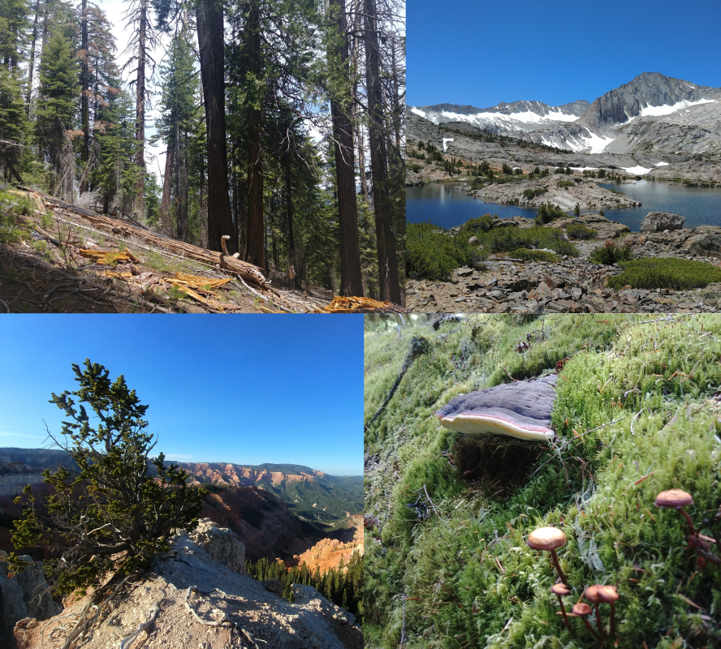
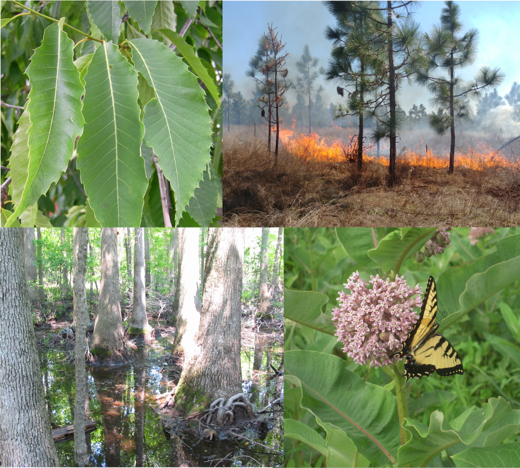

I am a doctoral student at Utah State University under the advisement of James A. Lutz. I am part of the Western Forest Initiative (WFI), a longitudinal study of old-growth forests in western North America and an affiliate of the Smithsonian Institution ForestGEO network. Our research focuses on tree mortality and forest population/community dynamics in three distinct reference forest types of the West.

As I develop my specific research program, I hope to address gaps in our understanding of how climate and fire interact with population- and community-level processes to shape the forested ecosystems of North America.

I have worked on research and conservation projects in the eastern US from northern Maine to southern Virginia and west to the Great Plains. Topics include: modelling population dynamics of common milkweed (Aslepias syriaca) using functional traits, monitoring disease spread in American chestnut (Castanea dentata), prescribed fire application for longleaf pine (Pinus palustris) restoration and management, and wetland mitigation and riparian restoration.